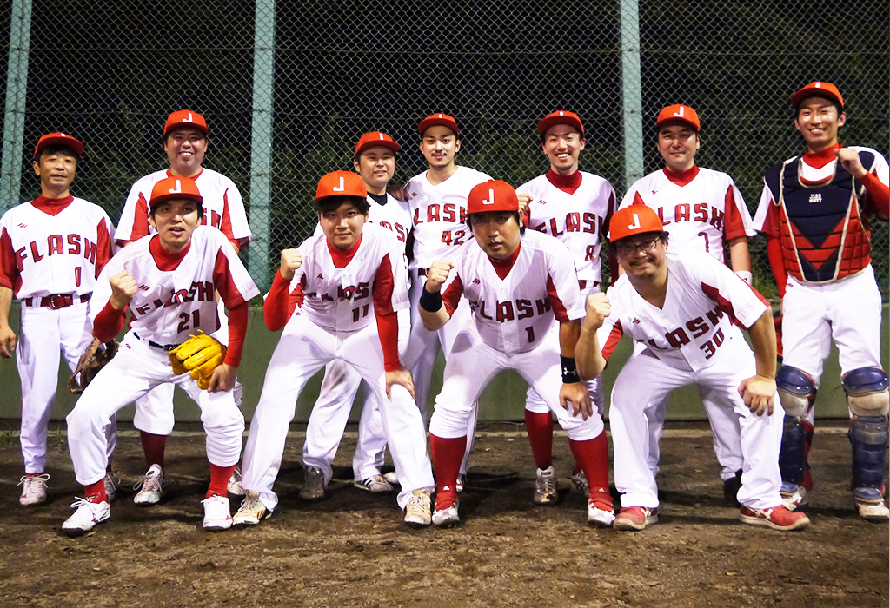
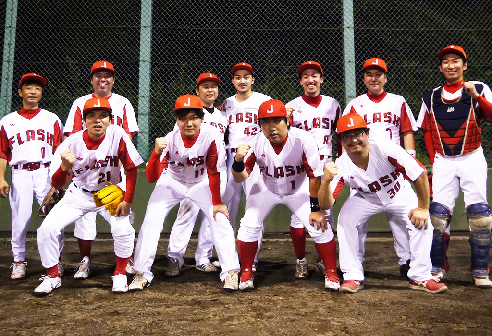

JAPAN FLASHとは？
2016年に発足した、中央区のとある会社を母体としている、実業団チームです。
元高校球児5人を抱えており、潜在能力は中央区でもトップレベルです。
チームの誕生から数えて今年で5年目を迎えますが、今期は眠れる獅子たちの活躍が期待されます。

（2019年9月現在）
2016年に発足した、中央区のとある会社を母体としている、実業団チームです。
元高校球児5人を抱えており、潜在能力は中央区でもトップレベルです。
チームの誕生から数えて今年で5年目を迎えますが、今期は眠れる獅子たちの活躍が期待されます。

（2019年9月現在）
ジャパンフラッシュのフラッシュとは、母体となっている会社名から取っており、会社の宣伝も兼ねております。
FLASH(閃光)のようにダイヤモンドを駆け巡ることで相手を翻弄し、「光り輝く」未来を目指します。
個人主義的な考えを捨て、チーム全員が勝利を第一とする機動力野球、及びチームプレーを心掛けています。
自分さえ良ければ良いという姿勢では、勝利は遠のくばかり。全員が一丸となり、互いに協力してこそ成功が見えてきます。
野球にも仕事にも同じことが言えます。